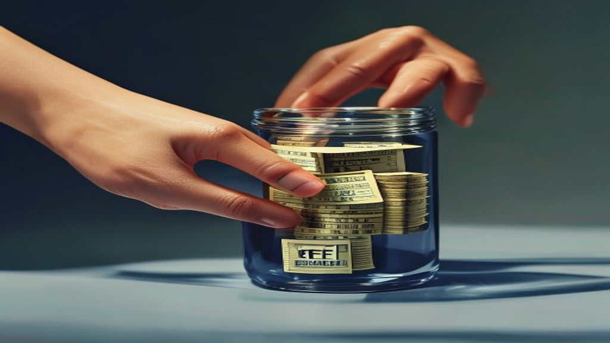
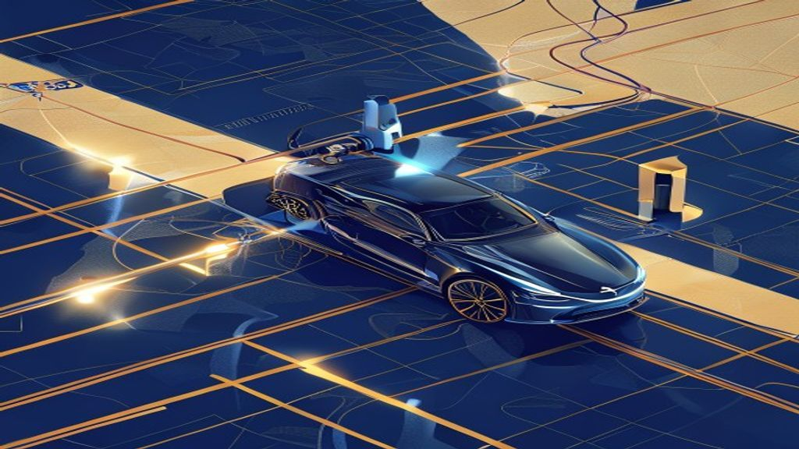
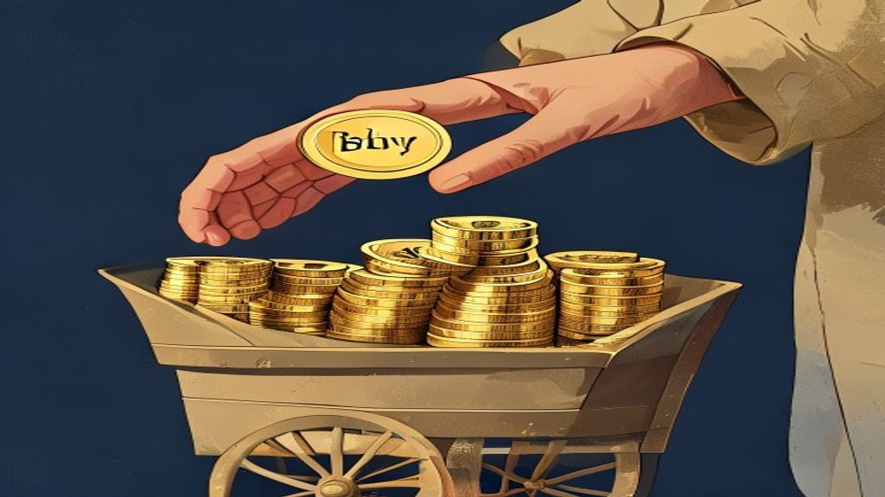

Explained
Markets and money concepts, explained simply.

Your Money and ETFs: Why SEBI Just Made Them Better for You
Exchange Traded Funds (ETFs) are investment baskets that trade like shares on stock exchanges. They usually track an index, like the Nifty 50, giving you broa.
Your Insurance Agent's Pay May Change: What IRDAI's New Plan Means for You
India's insurance regulator, IRDAI, is planning big changes to how insurance agents and distributors are paid. IRDAI Chairman Ajay Seth recently announced a c.

India's Big Push for EV Charging: Powering Your Electric Ride
India is rapidly expanding its network of public electric vehicle (EV) charging stations across the country. This push is driven by government targets and lar.

Politics explained
The government has approved higher Minimum Support Prices (MSP) for 14 Kharif crops for the 2026-27 season. MSP is a guaranteed price at which the government .

Economics explained
India's merchandise trade deficit is the gap when the value of goods imported exceeds the value of goods exported. Recent data for May 2026 showed the deficit.
Getting Your Share Sale Money Instantly: What T+0 Settlement Means
T+0 settlement means you get your money on the very same day you sell shares in the stock market. India's market regulator, SEBI, has made T+0 settlement opti.

Market explained
India has opened its stock market wider to individual investors living abroad. Earlier, only Non-Resident Indians (NRIs) and Overseas Citizens of India (OCIs).

SEBI's Madhabi Puri Buch: Protecting Your Money from Online Threats
SEBI Chairperson Madhabi Puri Buch recently highlighted the crucial need for stronger cybersecurity in India's financial markets. This means stock exchanges, .

Amazon's Big Bet on India: What $48 Billion Means for Your Digital Life
Amazon is investing a massive $48 billion (over ₹4 lakh crore) in India by 2030. A significant portion, $13 billion, is specifically for Artificial Intelligen.

West Bengal's Budget Shift: What Cuts to Minority Welfare Funds Mean
The new West Bengal government has significantly reduced funds for the Minority Affairs and Madrasah Education (MAME) Department. The budget for the departmen.

India's Current Account: Why a Surprise Surplus in Q4 FY26 Matters
India recorded a healthy $7.1 billion (₹59,200 crore approx.) current account surplus in January-March 2026 (Q4 FY26). This means the country earned more fore.

Your Insurance Policy: Now, Who Really Sold It To You?
India's insurance regulator, IRDAI, is proposing big changes to how insurance is sold. Every insurance policy might soon be digitally linked to the specific s.

SEBI Brings Back Open-Market Share Buybacks: What It Means for Your Investments
India's market regulator, SEBI, has decided to reintroduce open-market share buybacks through stock exchanges. A share buyback is when a company buys its own .
Easier Days for Families: SEBI Simplifies Inheriting Shares
SEBI Chairman Tuhin Kanta Pandey led a recent Board meeting that approved new rules to make inheriting shares much simpler. If an investor passes away, their .
Decoding the Jio Platforms IPO: What it Means for You
Jio Platforms, the digital arm of Reliance Industries, has filed initial papers for its much-awaited Initial Public Offering (IPO). This move aims to list one.
What is PM-KISAN and Why Are Farmers Getting Money This Week?
The Pradhan Mantri Kisan Samman Nidhi (PM-KISAN) scheme gives financial support to eligible farmer families in India. Each eligible family receives ₹6,000 per.
India's Financial Shield: What Are Our Foreign Exchange Reserves?
India's foreign exchange reserves are like a country's emergency savings, held by the RBI in foreign currencies, gold, and other assets. As of June 5, 2026, I.
What's Happening with Your PPF and Other Small Savings Rates?
The Indian government reviews interest rates for popular small savings schemes like PPF every three months. The next announcement, setting rates for July-Sept.
What Are Block Deals and Why Do They Move Stock Prices?
Block deals are single, very large transactions of company shares in the stock market. They are usually done by big investors like mutual funds or foreign fun.
Your Future Job: Will AI Be Your Next Co-Worker? What Tata's Chairman Just Said
N. Chandrasekaran, Chairman of Tata Sons, recently said that Tata Consultancy Services (TCS) could soon have as many Artificial Intelligence (AI) 'agents' as .
India-US Trade Talks: Why New Tariffs Could Affect Your Wallet
The United States is considering new import taxes, called tariffs, on certain goods from India. This comes amidst ongoing trade discussions and a recent meeti.
Understanding India's Production-Linked Incentive (PLI) Schemes: Boosting 'Made in India'
The Production-Linked Incentive (PLI) scheme is a government initiative that offers financial rewards to companies for increasing their manufacturing output a.
What is India's Industrial Production Index (IIP) and Why Did It Get an Update?
India's factory output, measured by the Index of Industrial Production (IIP), grew by 4.9% in April 2026. The government has updated how it calculates IIP, us.
Your Income Tax Return (ITR) for FY 2025-26: Deadlines & What's New
The deadline to file your Income Tax Return (ITR) for the Financial Year (FY) 2025-26 (Assessment Year 2026-27) is approaching. Most salaried individuals and .
What Are Futures & Options (F&O) and Why Are They Making News?
Futures & Options (F&O) are financial contracts whose value comes from an 'underlying asset' like a stock or a market index. They let you bet on future price .
RBI Governor Shaktikanta Das: Making Your Digital Payments Safer
RBI Governor Shaktikanta Das recently emphasized the central bank's commitment to strengthening digital payment security. This focus comes as more Indians use.
India's Data Centre Boom: Powering Your Digital Life
India is seeing a massive surge in data centre construction and investment. These centres are like giant digital brains that store and process all your online.
India's Big Bet on Semiconductor Manufacturing: What It Means for You
India is actively working to build its own semiconductor manufacturing industry from scratch. This involves substantial government support and incentives for .
RBI Keeps Repo Rate Steady: What It Means for Your Money and India's Growth
The Reserve Bank of India (RBI) decided to keep the key interest rate, called the repo rate, unchanged at 5.25% on June 5, 2026. This means your loan EMIs and.